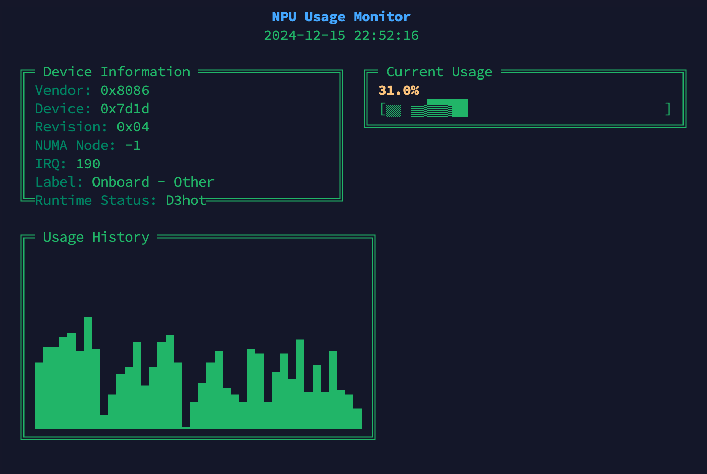

A minimalist, zero-dependency monitoring tool for Intel Meteor Lake NPU usage in real-time via sysfs on Linux. Features clean ASCII-based visualization in just 52 lines of Python.
Just copy STANDALONE.py to your system and run it - that's it! No dependencies, no package management, no fuss.
pip3 install intel-npu-top
git clone https://github.com/DMontgomery40/intel-npu-top
cd intel-npu-top
python3 -m pip install .
docker-compose up
Note: Docker is overkill for local monitoring - but great if you're pulling NPU data from another VM!
ls -lh /sys/devices/pci0000:00/0000:00:0b.0/accel/accel0sudo python3 STANDALONE.py
sudo intel-npu-top
The interface shows:
This project builds upon ZoLArk173/nputop. Thanks for the inspiration and groundwork!
MIT License - See LICENSE file for details.